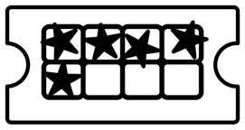

Prev - #17 Dice Roll | Table of Contents | Next - #19 Password Generator
getCostOfCoffee(7, 2.50) → 17.50
getCostOfCoffee(8, 2.50) → 20
getCostOfCoffee(9, 2.50) → 20

Let’s say a coffee shop punches holes into a customer’s card each time they buy a coffee. After the card has eight hole punches, the customer can use the card to get their 9th cup of coffee for free. In this exercise, you’ll translate this into a simple calculation to see how much a given quantity of coffees costs while considering this buy-8-get-1-free system.
Exercise Description
Write a function named getCostOfCoffee()
that has a parameters named numberOfCoffees and pricePerCoffee. Given this information, the function
returns the total cost of the coffee order. This is not a simple multiplication
of cost and quantity, however, because the coffee shop has an offer where you
get one free coffee for every eight coffees you buy.
For example, buying eight coffees for $2.50 each costs $20 (or 8 × 2.5). But buying nine coffees also costs $20, since the first eight makes the ninth coffee free. Buying ten coffees calculates as follows: $20 for the first eight coffees, a free ninth coffee, and $2.50 for the tenth coffee for a total of $22.50.
These Python assert statements stop
the program if their condition is False. Copy them
to the bottom of your solution program. Your solution is correct if the following
assert statements’ conditions are all True:
assert getCostOfCoffee(7, 2.50) == 17.50
assert getCostOfCoffee(8, 2.50) == 20
assert getCostOfCoffee(9, 2.50) == 20
assert getCostOfCoffee(10, 2.50) == 22.50
for i in range(1, 4):
assert getCostOfCoffee(0, i) == 0
assert getCostOfCoffee(8, i) == 8 * i
assert getCostOfCoffee(9, i) == 8 * i
assert getCostOfCoffee(18, i) == 16 * i
assert getCostOfCoffee(19, i) == 17 * i
assert getCostOfCoffee(30, i) == 27 * i
Try to write a solution based on the information in this description. If you still have trouble solving this exercise, read the Solution Design and Special Cases and Gotchas sections for additional hints.
Prerequisite concepts: while loops,
augmented assignment operator
Solution Design
I have two solutions for this exercise. The simpler one is a counting
approach to this exercise. First, we create variables to track how much the
total price is so far (this starts at 0) and how
many cups until we get a free cup of coffee (this starts at 8). We then have a while loop
that continues looping as long as there are still cups of coffee to count.
Inside the loop, we decrement the numberOfCoffees
argument and check if this is a free cup of coffee. If it is, we reset the
number of cups to the next free cup back to 8. If it isn't a free coffee, we
increase the total price and decrement the number of cups to the next free cup.
After the loop finishes, the function returns the variable tracking the total price.
Special Cases and Gotchas
There are several places where you can have an off-by-one error. These errors result from simple oversights that lead to slightly wrong calculations.
First, note that you must buy eight cups of coffee to get the ninth cup for free; you don't get the eighth cup for free. Also the free cup of coffee doesn't count towards the eight cups you buy to get a free cup. The price of eight cups and nine cups is the same: you can purposefully forego a free cup of coffee.
Now try to write a solution based on the information in the previous sections. If you still have trouble solving this exercise, read the Solution Template section for additional hints.
Solution Template
Try to first write a solution from scratch. But if you have difficulty, you can use the following partial program as a starting place. Copy the following code from https://invpy.com/buy8get1free-template.py and paste it into your code editor. Replace the underscores with code to make a working program:
def getCostOfCoffee(numberOfCoffees, pricePerCoffee):
# Track the total price:
totalPrice = ____
# Track how many coffees we have until we get a free one:
cupsUntilFreeCoffee = 8
# Loop until the number of coffees to buy reaches 0:
while numberOfCoffees ____ 0:
# Decrement the number of coffees left to buy:
____ -= 1
# If this cup of coffee is free, reset the number to buy until
# a free cup back to 8:
if cupsUntilFreeCoffee == ____:
____ = 8
# Otherwise, pay for a cup of coffee:
else:
# Increase the total price:
totalPrice += ____
# Decrement the coffees left until we get a free coffee:
cupsUntilFreeCoffee -= ____
# Return the total price:
return ____
The complete solution for this exercise is given in Appendix A and https://invpy.com/buy8get1free.py. You can view each step of this program as it runs under a debugger at https://invpy.com/buy8get1free-debug/.
Another Solution Design
The counting solution design, while simple, gets slower the larger the number of purchased coffees becomes. If you called getCostOfCoffee(1000000000, 2.50) it could take a couple of minutes before the function returns an answer. There’s a more direct way to calculate the total price for these large coffee orders.
First, you can calculate the number of free coffees by integer
dividing numberOfCoffees by 9.
For every nine coffees, one is a free coffee. Any remainder coffees don’t
matter for counting the number of free coffees, which is why you use the // integer division operator instead of the / regular division operator. Store this division result in
a variable named numberOfFreeCoffees.
To calculate the number of paid coffees, subtract numberOfFreeCoffees from numberOfCoffees
and store this difference in a variable named numberOfPaidCoffees.
(This makes sense; coffees are either paid for or free, so the number of paid
and free coffees must add up to numberOfCoffees).
The final value to return is the numberOfPaidCoffees
times the pricePerCoffee.
The benefit of this solution design is that it does three
calculations (a division, a subtraction, and a multiplication) no matter how
big or small numberOfCoffees. Calling getCostOfCoffee(1000000000, 2.50) with this implementation
finishes in milliseconds rather than minutes.
Another Solution Template
Try to first write a solution from scratch. But if you have difficulty, you can use the following partial program as a starting place. Copy the following code from https://invpy.com/buy8get1free2-template.py and paste it into your code editor. Replace the underscores with code to make a working program:
def getCostOfCoffee(numberOfCoffees, pricePerCoffee):
# Calculate the number of free coffees we get in this order:
numberOfFreeCoffees = ____ // 9
# Calculate the number of coffees we will have to pay for in this order:
numberOfPaidCoffees = numberOfCoffees - ____
# Calculate and return the price:
return ____ * ____
The complete solution for this exercise is given in Appendix A and https://invpy.com/buy8get1free2.py. You can view each step of this program as it runs under a debugger at https://invpy.com/buy8get1free2-debug/.
Prev - #17 Dice Roll | Table of Contents | Next - #19 Password Generator